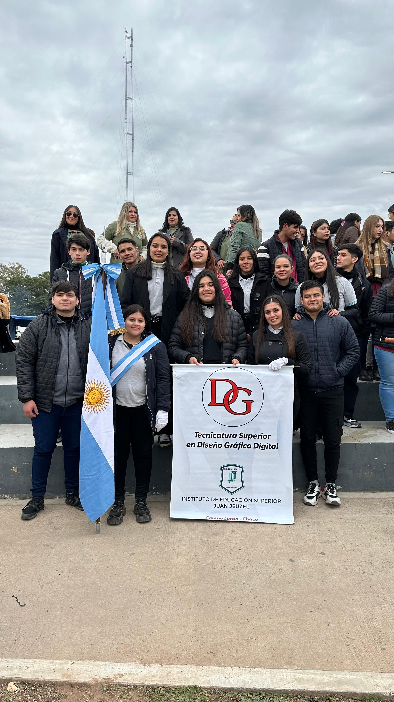
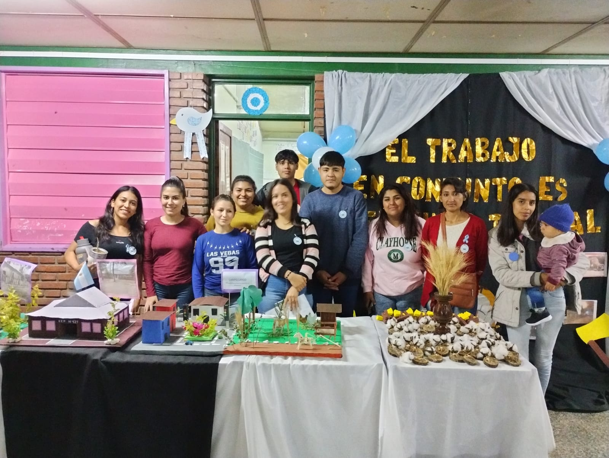
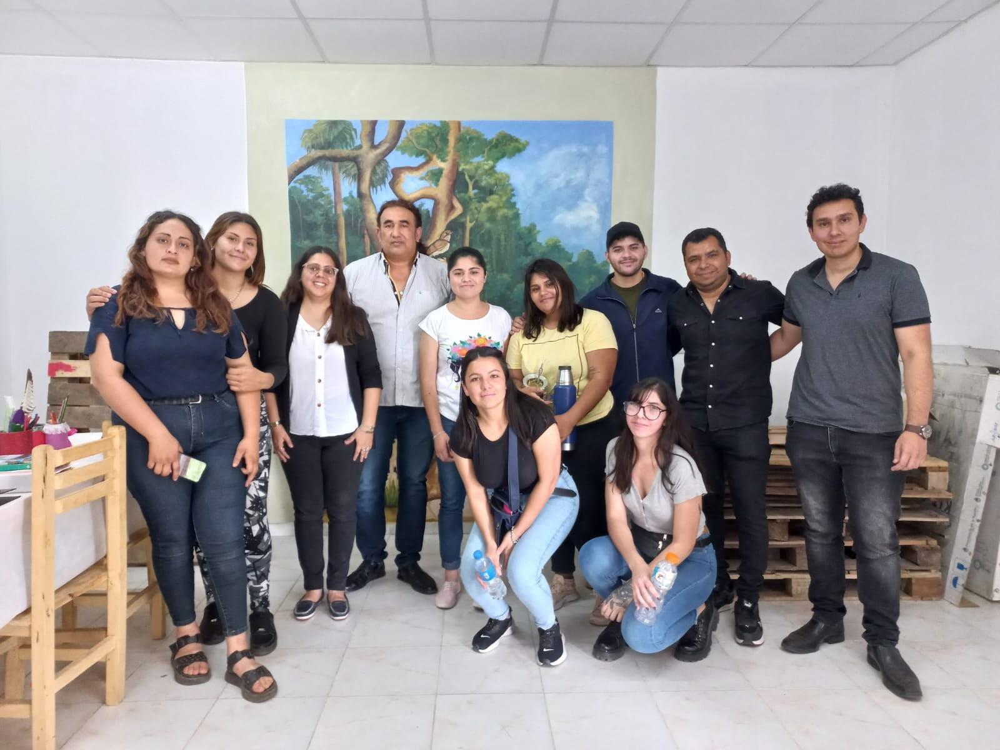
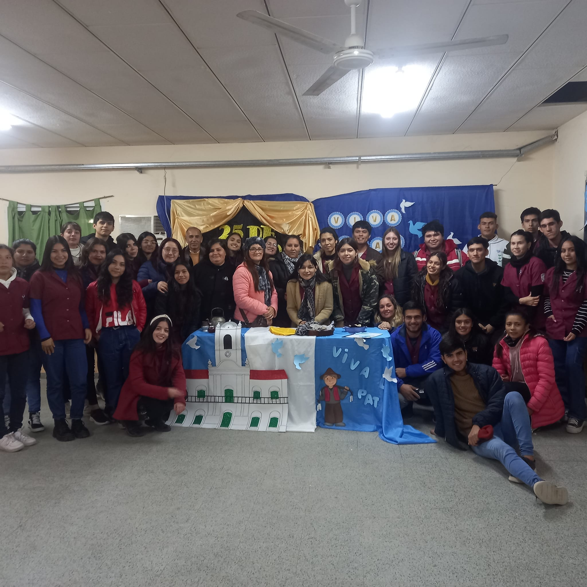
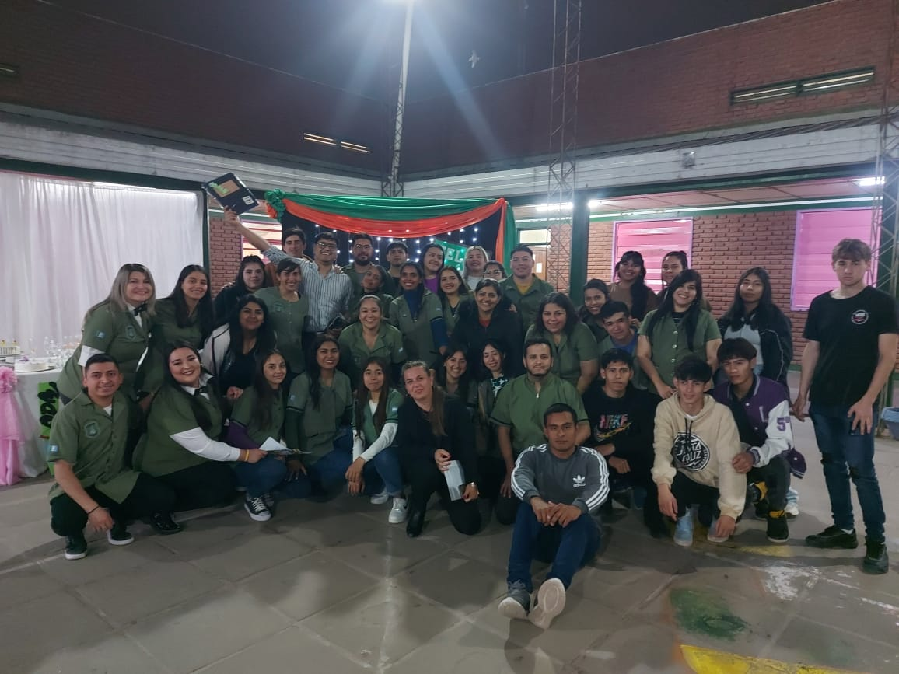

.png)
 INICIO
INSTITUCIÓN
CARRERAS
ESTUDIANTES
CONTACTO
INICIO
INSTITUCIÓN
CARRERAS
ESTUDIANTES
CONTACTO
Variedad de carreras que ofrece el IES JUAN JEUZEL
Ante la necesidad que demostraron muchos jóvenes y adultos de continuar estudios terciarios capacitarse en una profesión y tener trabajo digno sin tener que emigrar hacia otras localidades en busca de un futuro mejor.
Instituto de nivel superior
En el instituto Juan Jeuzel se dictan una variedad de carreras con salidas laboral dentro de lo que demanda el mercado.Tecnicatura Superior en Diseño Gráfico y Dijital
La carrera de Diseño Gráfico consiste en aprender sobre la composición visual, estética y manejo de herramientas para transformar una idea en una pieza gráfica12. Los diseñadores gráficos utilizan elementos gráficos, tipografía, colores y composición para transmitir mensajes claros y atractivos2. La carrera se enfoca en la creación de contenidos audiovisuales para las redes sociales y plataformas webs mediante estrategias de comunicación con el objetivo de transmitir determinadas ideas
Tecnicatura Superior en Administración de Empresa
La Tecnicatura Superior en Administración de Empresas es una carrera que abarca principios fundamentales de economía, contabilidad, finanzas, marketing y recursos humanos. Los egresados pueden desempeñarse en cargos de toma de decisiones en organizaciones públicas o privadas, con habilidades en liderazgo, innovación y gestión de equipos.
Profesorado de Educación Secundaria en Derecho
El profesorado en Derecho es una carrera diseñada específicamente para potenciar las competencias pedagógicas de los profesionales que se desempeñan en el ámbito de la Abogacía. Tiene duración de 4 años y se dicta integrando actividades sincrónicas y asincrónicas.
Profesorado en Ciencia de la Educación
El Profesorado de Educación Superior en Ciencias de la Educación forma docentes para desempeñarse en los Niveles Secundario y Superior. Es una carrera de 5 años de duración y su formación incluye: el conocimiento del sistema educativo, la escuela, la enseñanza y el trabajo docente en el contexto histórico y social actual.
Profesorado en Ciencia de la Administración
El Profesorado en Ciencia de la Administración es una carrera enfocada en la formación de docentes que enseñen temas relacionados con la administración y la gestión. Esta carrera combina teoría y práctica en áreas como administración de empresas, recursos humanos, contabilidad, marketing y economía.
Profesorado Superior en Música
El Profesorado Superior en Música es una carrera enfocada en la formación de docentes especializados en la enseñanza de música. Los estudiantes profundizan en teoría musical, técnica instrumental, pedagogía y dirección de grupos musicales.